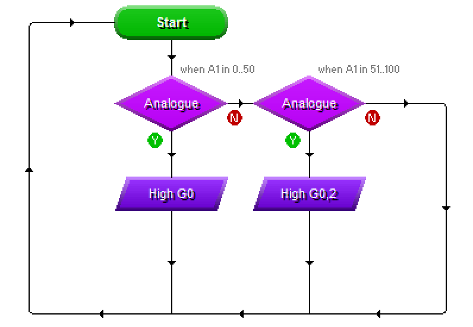

PIC Circuits
Table of Contents
1 Digital Vs. Analogue
Design time
- We've nearly covered all the theory we'll need for this project. The last stage is to add the type of intput your project will use.
- Some input components are digital. This means that they can only be either 'on' or 'off', like switches or buttons.
- Some input components are analogue. This means they can have a range of different values, like a LDR or thermistor.
- LDRs work because their resistance increases as it gets darker, and when connected to an analogue input on a PIC chip, this can be read as a number between 0 (very dark) and 255 (extremely bright).
- Modify your circuit diagram, by swapping the PTM switch for an LDR (found in the Sensors section of Input Components in Circuit Wizard).
- NOTE: The LDR is connected to input 6. This is because an LDR is an analogue component, so needs to be connected to an input that can accept it (notice the /A after G1 in the picture below).
- You will find the LDR in Circuit Wizard under the 'Sensors' option in the drop box.

- Your circuit should now look something like the picture above.
- Lets look at the results of this work. Click the 'play' button to run the circuit, then click the text saying, 'View the analogue sensor readings' which can be seen on the far right-hand side of the circuit wizard window, about half-way down the screen.

- Your screen should look the same as shown above. If you now click once on the LDR symbol on the circuit diagram, you can simulate a change in light level by dragging
- We can now be a little more flexible about how our programs work. With a digital switch, we're no longer limited to "is it on?". We could program our chip to work as a light meter, for instance.
Save It
Save your work as "Analogue PIC.cwz".
Code It
- Using the analogue diamond shape in Circuit Wizard, create the following program…

- Note the values I used on the decision diamonds.
- Make sure with your output parallelograms that you turn off any outputs that aren't being turned on. For instance, in the bottom-left shape, I turned output 0 on, and also turned off outputs 1 and 2.
- Test your program when finished, and see how changing the light level affects how many LEDs are turned on.
- This is the Gold Badge - Progress ladder, Green - With assistance, write programs to handle inputs in a PIC circuit.
Try It
- Try adding another decision box to turn all 3 LEDs on when the light level is even higher.
- Try adding another decision box (and adjusting the others), so that all the LEDs are off when its dark, then one, two or 3 come up as it gets brighter.
- Then change it again so that when its really bright, all 3 LEDS flash on and off repeatedly.
- Save your best program as, "my analogue program.cwz".
2 Badge It
Silver and Gold Badges
- Complete the quiz
<LINK TO QUIZ 3>
Platinum Task
Create a text document and answer the following questions:
- Progress ladder Blue - Independently discuss PIC circuits and how they handle both digital and analogue data.
- What are the advantages of using PIC chips over traditional circuit design?
- Giving examples, explain the difference between analogue and digital input components.
- In programming, what is meant by the term, "loop"? Why is is often advantageous to have programs use these, rather than running through their code from top to bottom?
- Write down the purpose of each pin on a Genie G08. E.g. Pin 1 - Power, Pin 2 -… etc. You can find out most of these by hovering the mouse over the pins in Circuit Wizard, but for some, you'll need to explore the Circuit Wizard help files.
- Hand in your completed questions for the platinum badge.